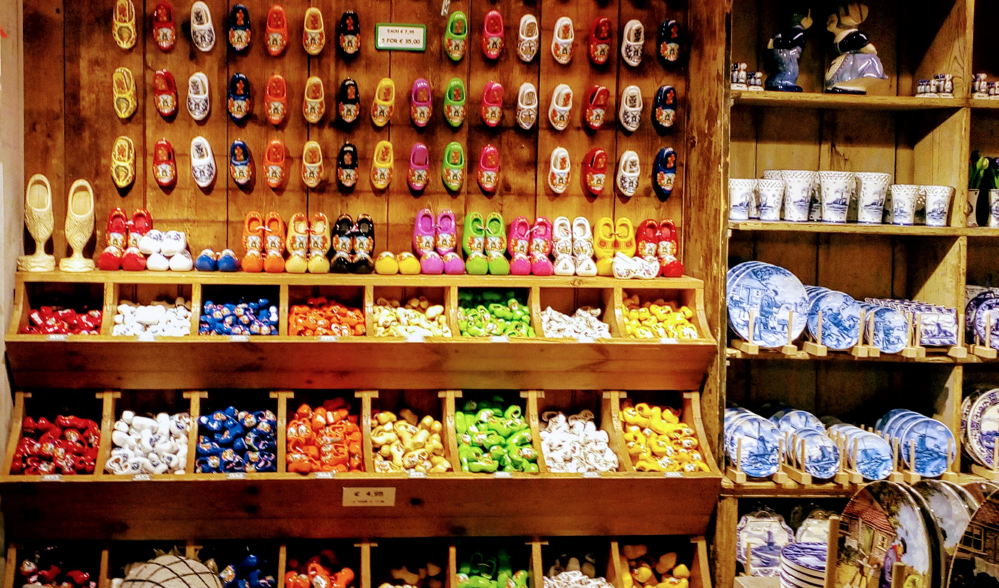

Corona confinement can be difficult for everyone and for very different reasons. Being a researcher, I spend most of my time in front of the computer, with books, sitting indoor. Sometimes that happens for days at a stretch when there is some deadline nearby or I have a report due. But this time it is getting increasingly difficult to do the same thing that I’ve been doing for years. I believe it has a lot to do with the situation. The human being is complicated, and they don’t like to do things that they are forced to do. This forced self-confinement is even more unbearable because of the news that we keep on getting throughout the day about terrible things happening to the people around us. Fear of the unknown is submerging our conscience and it can be very stressful for people who are unwillingly staying at home. Many of us have family elsewhere, sometimes in other countries or the opposite part of the world. Trust me, if you feel restless, others are not in peace either.
Taking care of our minds is equally important for taking care of our health. From the experience of staying in home-quarantine for a couple of weeks, I have come with some very effective, tried-and-tested ways to deal with isolation and loneliness. Give some of these ways a try, and I’m pretty sure that you won’t regret the decision of taking it up. Here are some food for your mind to survive in self-quarantine. You can pick one or more of these, to deal with the isolation blues during this crisis.
1. Learn a new language
I keep on moving from one place to another and every country has its language and dialects. Though I’m very enthusiastic about learning a new culture, language, lifestyle, etc., I always find an excuse to not dedicatedly master the language. I learn the very basics just to survive in the new country, to talk to the police, bus-driver, visa-office, read food-labels in the supermarket, but leave it there. If you are planning to move to a new place, a new state, country or continent, start early on their language. It will smoothen your transition. If you are already there, it is never too late to brush up your knowledge. Even if you are simply enthusiastic about new cultures, then learning their language is a great starter. Moreover, being multilingual looks pretty good in your CV/Resume. It gives the employer an impression of your continuous learning curve.
By the way, by language, I meant natural languages like English, Urdu, Spanish, French, German, Dutch, etc., but if you want, you can always learn a new programming language and put it into some good use later.
Photo courtesy: Pradipta Deb; Location: Checkpoint Charlie, Berlin
2. Learn a new form of art or craft
You may never know what you love and what you can do, until and unless you explore it. You may have never drawn after your last biology examination. Just let your imaginations fly. In this busy world, we have no time for our artistic soul. It is said that humans are artistic in nature, they dance before they can stand, sing before they can talk and draw before they learn to write. The current situation can be considered as the perfect exposure for our abilities. Put this time into good use and learn the instrument whose sound always fascinated you or the dance form you always wanted to learn. Pick the pencil and start sketching or dust the sewing machine hiding behind everything in your storeroom. Learn a martial art or do calisthenics. It can be anything and believe that your abilities have no limit.
Photo courtesy: Pradipta Deb; Cartoon: Moitree Basu
3. Show your plants some love
Blessed are those, who have a tiny piece of green in their house. Its time to show your plants some extra love and care for giving the extra comfort among all the loneliness. People in many big cities live in a small apartment without a garden or any open space available for gardening. They can also make a customized garden if they have a balcony or even a window. Choose some plants or seeds wisely according to the space you have during your next trip to the supermarket and create your little paradise.
 Photo courtesy: Pradipta Deb
Photo courtesy: Pradipta Deb
4. Watch themed documentaries and movies
We all watch movies or television shows online after we get back from work or at the dinner table. But generally, the choices made are very scattered depending on our mood and free time. But these long break from work is the opportunity to be consistent about that. I’m fascinated about World War 2 and this is the ideal time to watch a lot of informative documentaries and movies made on that particular topic to generate a solid knowledge base through entertainment. However, please be aware of your mental state as watching movies on too gloomy a subject like wars, epidemic, genocide, mass murders, gory subjects and longer exposure to them can affect your mind and in turn health. Choose the topic wisely according to your mental state and absorption ability. For that matter watching kids’ special collection could also be a nice choice for an emotionally engaging but light on mind entertainment option.
Photo courtesy: Pradipta Deb; Location: Marine/Aquarium Museum, Nancy, France
5. Read a book
This trick just never gets old. But unfortunately, in today’s world, we are so busy, we are always looking for quick options and prefer audio-visual mediums over printed texts. But this time it’s different, its time to step back and sit on your couch with an old-fashioned paperback. It’s a golden chance for you to pick that fat one with hundreds of pages that you bought but always found an excuse for not reading it as it is too heavy to carry on the way to the office or read in the metro. No matter how heavy it is, lie down, relax and start giving it a read. If you have a tablet or a kindle then your job is even easier and no excuse is enough this time.
Find here: Perfect place to start
Find here: Great news
Find here: Kids, be happy
Photo courtesy: Pradipta Deb; Location: Frankfurt bookfair, Germany
6. Cook good food
No matter how good or bad the time is, we all have to eat and we have to eat healthily. Especially in this diseased time, keeping our health at its best version, boosting our immunity is our supreme responsibility. So if we have to cook and eat anyway, why not make it a fun task to bring joy to our soul along with nutrition to our cells. I heard an interview with an American woman stuck in a city of Italy saying that they are baking cakes every day for keeping the kids involved and happy. What a nice idea! It may not be cake every day for you but try to cook good food, try involving other members of the family into making the meal. Feel grateful together for this life and nourishment and all other positive things happening to you.
Photo courtesy: Pradipta Deb; Baker: Moitree Basu
7. Develop some professional skillset
Today is the ideal time to pick a new skill and practice them Some of them may stick to you for life or you may make a very interesting and rewarding career out of this new habit. Young people, with their exams postponed and classes closed, can find new ways to employ their time constructively. If you were forever envious to your classmate, or colleague or neighbor or your idol to have a special skill, you can take it up now. Find online learning materials and start honing this new skill of yours.
Photo courtesy: Pradipta Deb
8. Take some virtual tours
You are behaving as a responsible human being if you are staying home, canceling trips, not going out for running errands, going through the discomfort of being stuck at a confined place. But fortunately, through the internet, we have access to another virtual world with so many unknown things to explore. Some of them can be virtual tours to hundreds of museums and cultural centers, national parks, etc.
Find some of them here:
Find here: Google arts virtual tours
Find here: Some paintings
Find here: Aquarium
Find here: Gardens
Find here: National parks
Photo courtesy: Pradipta Deb; Location: Verdun, France
9. Create an archive
Some of you love songs, some love books, some love movies, origami, drama, instrument playing, and the list goes on. Your time and lack of engagements can be utilized to make an archive for these. We have heard of and read about many iconic characters who made archives of old music records, paper cutting of news or old thematic photographs. A lot of them have taken their place into renowned museums. How about contributing to your community of interest by collecting items and archiving them for the future benefit of the world? Do it now and brag about it to your next generations after decades.
 Photo courtesy: Pradipta Deb; Location: Wooden-shoe Museum and Workshop, Zaanse Schans, Zaandam, Netherlands
10. Pick up some new habits
Have you always dreamed of being a better version of yourself? Have you always envied someone you know for being so perfect in a lot of things in life? Its time you flush the envy down the toilet and make yourself someone you think others will envy. Find some habits that you might like to continue for life. It can be brushing after every meal and flossing your teeth at night. It can be drinking more water or exercising for an hour for 6 days a week. It can involve in testing your resolve and challenging yourself regularly. We all have heard that if we do something for 21days in a stretch, it becomes a habit. It may sound horrifying, but the global trend shows that this crisis is not going to be mitigated by the next 21days. So take this time for building those “good habits” that your parents have always preached, try doing it for 21days, build it into an iron-strong habit to be continued for life.
Photo courtesy: Pradipta Deb
11. Finish pending house chores
Do you have a pile of clothes to be washed in your house? How about sorting important documents and discarding unimported ones? Does your cupboard need to be organized and the window seals need to be cleaned? Sanitize your apartment, deep clean the hidden corner of your house, water your plants every day, sort tiniest things you use, clean your pantry and of course spend quality time with your family and dear ones. People who are stuck in their houses with kids should keep them involved in doing those chores. This will not only help you spend your time, but this will also keep your kids busy.
Photo courtesy: Pradipta Deb; Location: Zaandvoort coast, Netherlands
12. Spend some quality time with family and make some pending calls to friends, relatives
We all have friends and family living around the world and a lot of them are also forced to sit at home during this pandemic. Catching up with an old friend can be very rewarding at troubled times. Find the old phonebook or explore through your phone contacts and ring some of them. A very high chance is they are also thinking about you and would be very happy and relieved to talk to you. With all the advancement of technology making a few video calls should not cost more than a standard internet connection. But in case you don’t have one, an audio call can be no less rewarding. A video conference call to your school or college friends or cousins can make an evening blissful. While choosing among your relatives, give a higher priority to your elderly relatives, who might be awestruck by the current situation and may identify themselves as the main victim of this deadly disease. Besides, spend quality time with the family members who are living with you. Utilize this time that you are stuck with them anyway. Consider this as a golden opportunity to catch up with them, pay attention to your kids’ problems or parents’ complaints. Later
Photo courtesy: Pradipta Deb; Location: Lake Konstanz, Austria-Germany-Switzerland
13. Don’t let the bed bugs bite
This is the last but not at all the least important way to spend time. Sleep is the most effective coping mechanism inbuilt in the human body. The human child grows mainly when it sleeps. Sick people sleep a lot because their body needs time to mend itself. So getting quality zzz for long hours could save you a lot of mental irritation during this disturbing time. Try shutting all windows to avoid noise and switch off or at least dim light in your bedroom. Do not set alarms if your daily routine and personal responsibilities allow you to sleep until a bit late. Sitting in front of the television or watching a news channel online can put a serious strain on your mind and psyche. Even short naps whenever you get some time can be useful to reboot your system. Trust me, being sleep deprived even worsens the situation and weakens your mental resolve. As a result, you will be more anxious, irritable, crave junk foods and feel purposeless.
Read this: Coping with bad sleep cycle
Photo courtesy: Pradipta Deb; Location: Hellemmes-Lille, France
It is being said, “You have got only once in a lifetime opportunity to stay at home, to save the world. Don’t screw this up.". Just nourish your health and mind to get out of this crisis unharmed.